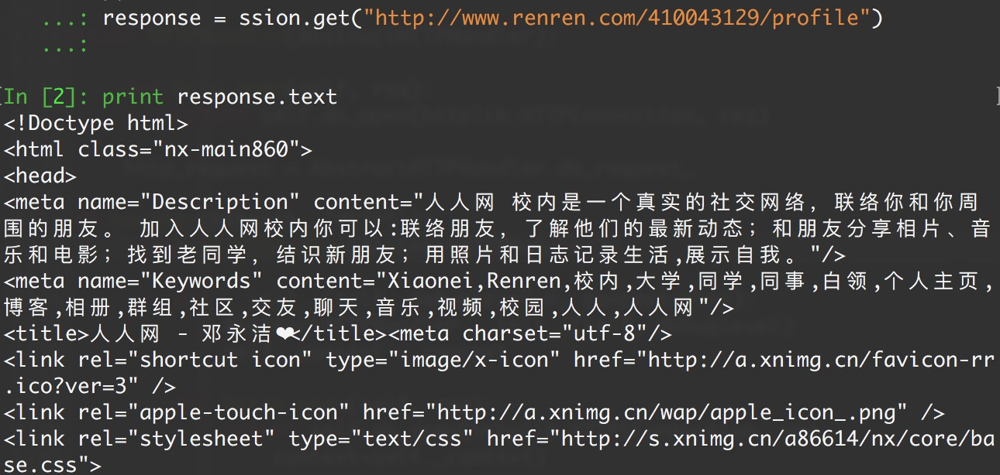

Requests: 让 HTTP 服务人类 虽然Python的标准库中 urllib 模块已经包含了平常我们使用的大多数功能，但是它的 API 使用起来让人感觉不太好，而 Requests 自称 “HTTP for Humans”，说明使用更简洁方便。
Requests 唯一的一个非转基因的 Python HTTP 库，人类可以安全享用：）
Requests 继承了urllib的所有特性。Requests支持HTTP连接保持和连接池，支持使用cookie保持会话，支持文件上传，支持自动确定响应内容的编码，支持国际化的 URL 和 POST 数据自动编码。
requests 的底层实现其实就是 urllib Requests的文档非常完备，中文文档也相当不错。Requests能完全满足当前网络的需求，支持Python 2.6–3.5，而且能在PyPy下完美运行。
开源地址：https://github.com/kennethreitz/requests
中文文档 API： http://docs.python-requests.org/zh_CN/latest/index.html
安装方式 利用 pip 安装 或者利用 easy_install 都可以完成安装：
1 2 3 $ pip install requests $ easy_install requests
1. 最基本的GET请求可以直接用get方法 1 2 3 4 response = requests.get("http://www.baidu.com/" )
如果想添加 headers，可以传入headers参数来增加请求头中的headers信息。如果要将参数放在url中传递，可以利用 params 参数。
1 2 3 4 5 6 7 8 9 10 11 12 13 14 15 16 17 18 19 20 21 22 23 24 import requestskw = {'wd' :'长城' } headers = {"User-Agent" : "Mozilla/5.0 (Windows NT 10.0; Win64; x64) AppleWebKit/537.36 (KHTML, like Gecko) Chrome/54.0.2840.99 Safari/537.36" } response = requests.get("http://www.baidu.com/s?" , params = kw, headers = headers) print (response.text)print (respones.content)print (response.url)print (response.encoding)print (response.status_code)
运行结果
1 2 3 4 5 6 7 8 9 <!DOCTYPE html><!--STATUS OK--><html>...<title>长城_百度搜索</title>... <!DOCTYPE html><!--STATUS OK--><html>...<title>长城_百度搜索</title>... 'http://www.baidu.com/s?wd=%E9%95%BF%E5%9F%8E' 'utf-8' 200
使用response.text 时，Requests 会基于 HTTP 响应的文本编码自动解码响应内容，大多数 Unicode 字符集都能被无缝地解码。
使用response.content 时，返回的是服务器响应数据的原始二进制字节流，可以用来保存图片等二进制文件。
基本POST请求（data参数） 1. 最基本的GET请求可以直接用post方法 1 response = requests.post("http://www.baidu.com/" , data = data)
2. 传入data数据 对于 POST 请求来说，我们一般需要为它增加一些参数。那么最基本的传参方法可以利用 data 这个参数。
1 2 3 4 5 6 7 8 9 10 11 12 13 14 15 16 17 18 19 20 21 22 23 import requestsformdata = { "type" :"AUTO" , "i" :"i love python" , "doctype" :"json" , "xmlVersion" :"1.8" , "keyfrom" :"fanyi.web" , "ue" :"UTF-8" , "action" :"FY_BY_ENTER" , "typoResult" :"true" } url = "http://fanyi.youdao.com/translate?smartresult=dict&smartresult=rule&smartresult=ugc&sessionFrom=null" headers={ "User-Agent" : "Mozilla/5.0 (Windows NT 10.0; WOW64) AppleWebKit/537.36 (KHTML, like Gecko) Chrome/51.0.2704.103 Safari/537.36" } response = requests.post(url, data = formdata, headers = headers) print (response.text)print (response.json())
运行结果
1 2 3 {"type":"EN2ZH_CN","errorCode":0,"elapsedTime":2,"translateResult":[[{"src":"i love python","tgt":"我喜欢python"}]],"smartResult":{"type":1,"entries":["","肆文","高德纳"]}} {u'errorCode': 0, u'elapsedTime': 0, u'translateResult': [[{u'src': u'i love python', u'tgt': u'\u6211\u559c\u6b22python'}]], u'smartResult': {u'type': 1, u'entries': [u'', u'\u8086\u6587', u'\u9ad8\u5fb7\u7eb3']}, u'type': u'EN2ZH_CN'}
代理（proxies参数） 如果需要使用代理，你可以通过为任意请求方法提供 proxies 参数来配置单个请求：
1 2 3 4 5 6 7 8 9 10 import requestsproxies = { "http" : "http://12.34.56.79:9527" , "https" : "http://12.34.56.79:9527" , } response = requests.get("http://www.baidu.com" , proxies = proxies) print response.text
也可以通过本地环境变量 HTTP_PROXY 和 HTTPS_PROXY 来配置代理：
1 2 export HTTP_PROXY="http://12.34.56.79:9527" export HTTPS_PROXY="https://12.34.56.79:9527"
私密代理验证（特定格式） 和 Web客户端验证（auth 参数） urllib 这里的做法比较复杂，requests只需要一步：
私密代理 1 2 3 4 5 6 7 8 9 import requestsproxy = { "http" : "mr_mao_hacker:sffqry9r@61.158.163.130:16816" } response = requests.get("http://www.baidu.com" , proxies = proxy) print (response.text)
web客户端验证 如果是Web客户端验证，需要添加 auth = (账户名, 密码)
1 2 3 4 5 6 7 import requestsauth=('test' , '123456' ) response = requests.get('http://192.168.199.107' , auth = auth) print (response.text)
Cookies 和 Sission Cookies 如果一个响应中包含了cookie，那么我们可以利用 cookies参数拿到：
1 2 3 4 5 6 7 8 9 10 11 12 13 14 import requestsresponse = requests.get("http://www.baidu.com/" ) cookiejar = response.cookies cookiedict = requests.utils.dict_from_cookiejar(cookiejar) print (cookiejar)print (cookiedict)
运行结果：
1 2 3 <RequestsCookieJar[<Cookie BDORZ=27315 for .baidu.com/>]> {'BDORZ' : '27315' }
Sission 在 requests 里，session对象是一个非常常用的对象，这个对象代表一次用户会话：从客户端浏览器连接服务器开始，到客户端浏览器与服务器断开。
会话能让我们在跨请求时候保持某些参数，比如在同一个 Session 实例发出的所有请求之间保持 cookie 。
实现人人网登录 1 2 3 4 5 6 7 8 9 10 11 12 13 14 15 16 17 18 19 import requestsssion = requests.session() headers = {"User-Agent" : "Mozilla/5.0 (Windows NT 10.0; Win64; x64) AppleWebKit/537.36 (KHTML, like Gecko) Chrome/54.0.2840.99 Safari/537.36" } data = {"email" :"mr_mao_hacker@163.com" , "password" :"alarmchime" } ssion.post("http://www.renren.com/PLogin.do" , data = data) response = ssion.get("http://www.renren.com/410043129/profile" ) print (response.text)

处理HTTPS请求 SSL证书验证 Requests也可以为HTTPS请求验证SSL证书：
要想检查某个主机的SSL证书，你可以使用 verify 参数（也可以不写）
1 2 3 4 5 6 import requestsresponse = requests.get("https://www.baidu.com/" , verify=True ) print (r.text)
运行结果：
1 2 <!DOCTYPE html> <!--STATUS OK--><html> <head><meta http-equiv=content-type content=text/html;charset=utf-8><meta http-equiv=X-UA-Compatible content=IE=Edge>百度一下，你就知道 ....
如果SSL证书验证不通过，或者不信任服务器的安全证书，则会报出SSLError，据说 12306 证书是自己做的：
来测试一下：
1 2 3 import requestsresponse = requests.get("https://www.12306.cn/mormhweb/" ) print (response.text)
果然：
SSLError: ("bad handshake: Error([('SSL routines', 'ssl3_get_server_certificate', 'certificate verify failed')],)",)
如果我们想跳过 12306 的证书验证，把 verify 设置为 False 就可以正常请求了。
1 r = requests.get("https://www.12306.cn/mormhweb/" , verify = False )